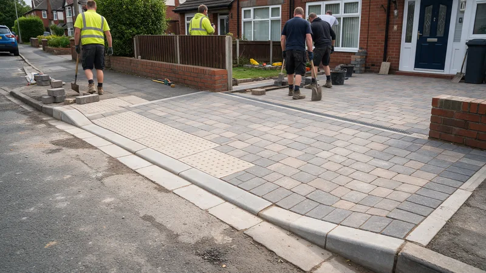
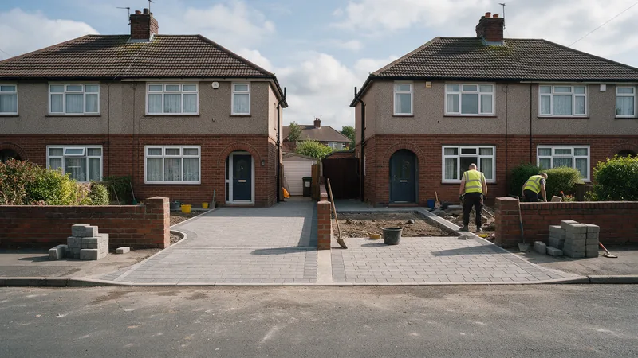
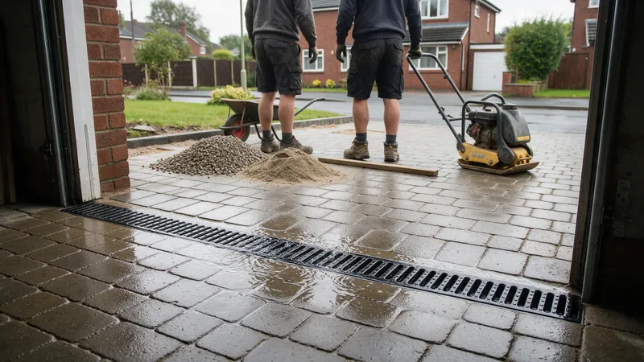

Home / Services / Dropped kerbs, through the council
Dropped kerbs, through the council
Dropped kerbs, through the council.
The crossing from the road on to your drive. The council decides whether you can have one, how wide, and often who is allowed to build it, so that part comes before anything else.
The council decides, not us
A dropped kerb, which councils usually call a vehicle crossing or a vehicle access, is work on the public highway. That means the local council's highways team decides whether your house can have one. They look at sight lines, the width of your frontage, how busy the road is, how close you are to a junction, a crossing or a bus stop, and whether there is a tree, a lamp post, a gully or a service box in the way.
Most councils want an application with a plan, and many hold a list of contractors approved to work on the footway in their area. Some do the work themselves and charge for it. The rules and the process are genuinely different from one council to the next, so the only right answer is to look at your own council's website or ring their highways team. We can tell you what they will probably ask about. We cannot tell you what they will decide, and anybody who promises you a crossing before you have applied is guessing with your money.
Why it comes first
Because the answer changes the drive. If the crossing can only be two and a half metres wide, the drive is designed round that. If the council says no on sight lines, you need to know that before you have paid for a drive you cannot legally get on to. And if they insist the footway work goes to a contractor from their list, that part of the job is not ours to price.
Driving over a full height kerb in the meantime is a bad idea. It breaks the kerb and the footway slabs, the damage is chargeable to you, and councils do notice a flattened kerb and a set of tyre tracks across a footway.
What we do and what we do not
We will walk the frontage with you, say what looks likely to be a problem, help you with the measurements and the plan for your application, and build the drive side of it so that it meets the crossing properly, at the right level, with the water dealt with at the mouth. If your council allows a firm like this one to do the footway work and we are on their list, that is part of the job. If not, they tell you who does it and we work to it.

Generated photoGenerated for this demo. Not a photograph of a real job.

Generated photoFrontage, sight lines and what is already in the footway. Generated for this demo.
On the job
How this one usually goes.
- We look at the frontage with youWidth, levels, what is in the footway, where your boundary actually is, and whether anything obvious is going to stop the application.
- You apply to the councilTheir form, their process, their decision. We help with measurements and a plan. Nothing on the drive gets booked until the answer is in.
- The council sets the termsHow wide, what construction, who may do the footway work, and when. Those terms, not our preferences, decide what happens next.
- The crossing gets builtBy whoever the council permits. Kerbs lowered on a proper bed and haunch, the footway rebuilt across the crossing, and the levels tied in to your drive.
- We finish the drive sideThe mouth of the drive built up to meet it, water caught at the threshold so nothing runs out on to the footway, and the edges tied in so there is no step.
A sample running order for this demo. Yours depends on the house and what comes out of the ground.
Questions
Asked about this job.
How long does a dropped kerb application take?
That is your council's timescale rather than ours, and it varies a lot. We are not going to invent a number for it on a demo site. Their highways page usually gives an indication, and it is worth ringing them rather than guessing, because it is the thing most likely to set the date for the rest of the work.
Can I just have the kerb dropped without doing the drive?
Councils generally want to see that there is somewhere proper to park off the road before they will approve a crossing, including the depth of it, so the two go together. Applying for a crossing to a front garden you have not converted yet is a common reason for a refusal. Ask them what they need to see.
What if the council says no?
Then it is no, and you need to know that before you have spent anything. Sometimes the reason is fixable, like a bin store or a boundary in the wrong place. Sometimes it is a sight line or a crossing nearby and it is not. They will tell you the reason, and that is the bit worth reading carefully.
Is a dropped kerb the same as a pavement crossing?
Different councils use different words for the same thing: dropped kerb, dropped crossing, vehicle crossing, vehicle access, footway crossing. If you are searching your council's website and getting nowhere, try the other names before you decide they have no page about it.
General trade knowledge written for this demo, not advice on your property.
Our work
Sample jobs like this.
 Generated photoBlock paving going down in herringboneHorwich Sample
Generated photoBlock paving going down in herringboneHorwich Sample Generated photoCharcoal blocks, buff sett borderWesthoughton Sample
Generated photoCharcoal blocks, buff sett borderWesthoughton Sample
Generated photoChannel drain at the garageLittle Lever SampleMade up samples with generated pictures. Tap one for the detail.
Also
The other things we do.
Block paving driveways
Dug out properly, a sub base that carries a car, and blocks laid to a line. The bit you see is the last day of the job and the smallest part of it.
More →Tarmac and resin driveways
Tarmac where you want one quiet surface and a good edge. Resin bound where you want gravel that stays where you put it and lets water through.
More →Patios
Sandstone, porcelain or concrete flags on a full bed, falling away from the house, with the joints and the step down sorted before anybody sits on it.
More →Drainage for drives
Channel drains, soakaways, falls and permeable surfaces. Where the water goes is the question that decides most of a driveway job.
More →Driveway cleaning and repairs
Washing, re-sanding and sealing, sunken patches lifted and relaid, and the odd flag that rocks. Far more drives need this than need replacing.
More →Shall we come and look at the levels?
Tell us what is there now and your postcode. If something has sunk and somebody could trip on it, use the urgent line instead.